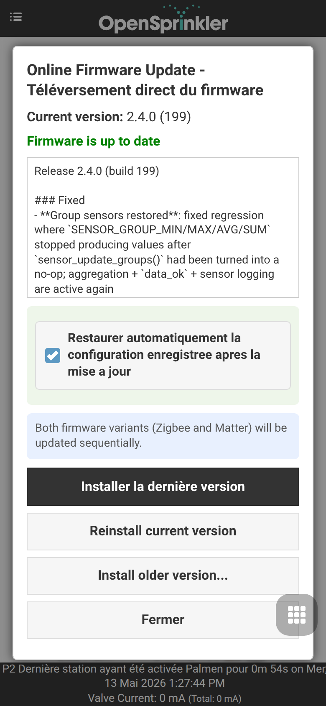

Manuel utilisateur du firmware 2.2.1(4) [10 novembre 2025]
Introduction
OpenSprinkler est un contrôleur d’arrosage/irrigation open source basé sur le Web, conçu comme remplacement direct des contrôleurs d’arrosage conventionnels dépourvus de connectivité Web. Ses principaux avantages comprennent une interface utilisateur intuitive, l’accès à distance et un contrôle d’arrosage intelligent basé sur la météo. Il est idéal pour les particuliers et les entreprises, pour des usages tels que l’arrosage de pelouses et de jardins, l’irrigation de plantes, l’irrigation goutte-à-goutte, l’hydroponie, etc.
Le matériel OpenSprinkler documenté ici existe en trois familles de produits :
- OpenSprinkler v3 – Dispose du WiFi intégré, de deux ports de capteurs indépendants et d’un module Ethernet filaire optionnel. Il est entièrement assemblé et préchargé avec le firmware.
- OpenSprinkler Pi (OSPi) – Alimenté par un Raspberry Pi (RPi), nécessitant un certain assemblage (par exemple la connexion du RPi) et l’installation du firmware.
- OpenSprinklerPro – Se câble selon les mêmes principes que OpenSprinkler v3.0-3.3 pour les vannes, COM, capteurs et l’alimentation, mais exécute le firmware OpenSprinklerShop plus évolué pour ESP32-C5 avec les extensions Pro. La ligne actuelle du firmware OpenSprinklerShop/OpenSprinklerPro est 2.4.0(199).
Chaque contrôleur fournit 8 zones, avec une extension possible via des extensions de zones (chacune ajoutant 16 zones) : OpenSprinkler v3 prend en charge jusqu’à 72 zones, et OSPi jusqu’à 200 zones. En outre, OpenSprinkler v3 est disponible en trois modèles d’alimentation :
- Alimentation AC – Livré avec un bornier Orange (v3.0-3.3) ou une prise d’alimentation cylindrique Rouge (v3.4). Nécessite un transformateur 24VAC (NON inclus par défaut ; disponible à l’achat en option, ou utilisez votre propre transformateur 24VAC).
- Alimentation DC – Livré avec une prise d’alimentation cylindrique Noire (v3.0-3.3) ou un connecteur USB-C (v3.4). Un adaptateur secteur compatible est inclus pour l’Amérique du Nord. Il peut fonctionner en 6V–24VDC, y compris avec un panneau solaire 12VDC. Malgré l’alimentation d’entrée DC, il est conçu pour commander des électrovannes d’arrosage 24VAC ainsi que des vannes DC non bistables.
- LATCH – Livré avec une prise d’alimentation cylindrique Noire et un adaptateur 7.5VDC pour l’Amérique du Nord. Il est spécialement conçu pour être utilisé uniquement avec des électrovannes bistables.
Quoi de neuf dans ce firmware ?
- Prise en charge de l’OpenSprinkler v3.4 alimenté en DC, le premier OpenSprinkler avec USB-C. Prend en charge USB PD (Power Delivery) via CH224 et permet une tension PD définie par l’utilisateur.
- Exécution préemptive pour les actions manuelles : Les lancements manuels de stations, les programmes à exécution unique et les programmes démarrés manuellement prennent désormais en charge des options de file d’attente définies par l’utilisateur :
- Ajouter à la fin : exécuter après les autres
- Insérer au début : exécuter maintenant et mettre les autres en pause
- Remplacer : exécuter maintenant et arrêter les autres (comportement par défaut dans les firmwares précédents).
- Backend GPIO OSPi : passage de
libgpioàlgpio, pour une API plus simple, compatible avec Raspbian Trixie, et pour éviter les changements incompatibles delibgpiodv2. - Mesures de courant plus régulières : Ajout d’un filtrage par moyenne mobile exponentielle (EMA) pour stabiliser la mesure du courant.
- URL de script météo flexible : Prise en charge explicite de
http/httpset d’un port personnalisé, ce qui facilite l’utilisation d’un service météo personnalisé. - Pages statiques optimisées : Les pages d’accueil AP et de mise à jour du firmware sont servies en HTML minifié et compressé pour des temps de chargement plus rapides et une empreinte réduite.
Interface matérielle
OpenSprinklerPro
OpenSprinklerPro utilise la plateforme ESP32-C5 avec WiFi 6, BLE et des variantes firmware Zigbee ou Matter. Les vannes, COM, capteurs et l’alimentation se câblent comme sur OpenSprinkler v3.0-3.3; ce diagramme montre la position des connecteurs et les interfaces Pro supplémentaires. Le logiciel est le firmware OpenSprinklerShop plus évolué avec les fonctions Pro, et non l’ancien firmware de base décrit par le manuel upstream d’origine.

OpenSprinkler v3.4 (nouveau)

OpenSprinkler v3.0-3.3

OpenSprinkler Pi (OSPi)

Schéma de câblage des zones
Le schéma ci-dessous montre comment câbler les vannes sur le contrôleur principal et les extensions.
Bases
- Chaque solénoïde de vanne possède deux fils. Regroupez un fil de chaque vanne (sur le contrôleur principal et les éventuelles extensions) dans un fil COM (commun). Connectez ce fil COM au port COM du contrôleur (n’utilisez PAS GND).
- OpenSprinkler possède deux ports COM : ils sont connectés en interne, vous pouvez donc utiliser l’un ou l’autre.
- L’autre fil de chaque vanne va vers son port de zone individuel (1, 2, 3, ...).
Polarité
- Les vannes AC n’ont pas de polarité — n’importe quel fil peut être le fil COM ou le fil de zone.
- Les vannes bistables sont polarisées — connectez le fil positif (généralement Rouge) à COM, et le fil négatif (généralement Noir) à un port de zone.
- Certaines vannes DC non bistables sont également polarisées. Là encore, positif → COM, négatif → zone.
Vanne principale / relais de pompe
- Si vous avez une vanne principale ou un relais de démarrage de pompe, connectez-le à n’importe quel port de zone — OpenSprinkler utilise des zones maître/pompe définies par logiciel, vous pouvez donc configurer quelles zones agissent comme maître.

Installation
Alimentation AC (utilisateurs internationaux)
Pour un OpenSprinkler alimenté en AC, vous devez utiliser un transformateur 24VAC qui correspond à la norme de tension secteur de votre pays. Un transformateur incompatible peut endommager le contrôleur. Si aucun transformateur 24VAC adapté n’est disponible, envisagez plutôt l’OpenSprinkler alimenté en DC (entrée 6–24VDC ; la v3.4 utilise USB-C). Ne connectez jamais l’alimentation secteur directement au contrôleur.
OpenSprinkler n’est PAS étanche
Si vous l’installez à l’extérieur, montez-le dans un boîtier résistant aux intempéries.
Guides vidéo
Des guides vidéo et tutoriels sont disponibles sur le site d’assistance OpenSprinkler.
Étape 1 : Préparation
Étiquetez soigneusement et retirez les fils de votre contrôleur d’arrosage existant au fur et à mesure que vous le déconnectez. Vous trouverez généralement :
- Des fils d’alimentation (si vous prévoyez de réutiliser votre alimentation existante)
- Un fil COM (commun)
- Un ou plusieurs fils de zone
- (Optionnellement) un fil de zone maître / relais de démarrage de pompe
- (Optionnellement) des fils de capteur de pluie / sol / débit
Étape 2 : Câblage d’OpenSprinkler
Reportez-vous aux sections Interface matérielle et Schéma de câblage des zones ci-dessus.
OpenSprinkler utilise des borniers amovibles pour faciliter le câblage. Pour détacher un bornier, saisissez fermement une extrémité, remuez doucement et tirez. Insérez complètement les fils, puis serrez solidement les vis.
Alimentation :
- OpenSprinklerPro : Câblez-le comme OpenSprinkler v3.0-3.3. Pour les modèles AC, connectez les fils 24VAC au bornier d’alimentation; pour un câblage de type DC/Latch, suivez les indications de polarité v3.0-3.3 DC/Latch. Le logiciel Pro et l’interface utilisateur sont plus récents et incluent des fonctions OpenSprinklerPro supplémentaires.
- OpenSprinkler v3.4 AC : Branchez le transformateur 24VAC dans la prise cylindrique Rouge.
- Si votre transformateur a des fils dénudés, utilisez l’adaptateur bornier-à-fiche inclus.
- OpenSprinkler v3.0-3.3 AC : Connectez les fils 24VAC au bornier Orange.
- L’AC n’a pas de polarité, les deux fils ne sont donc pas distingués.
- OpenSprinkler v3.4 DC : Branchez le câble USB-C au port USB-C (PWR).
- OpenSprinkler v3.0-3.3 DC et Latch : Insérez l’adaptateur DC dans la prise cylindrique Noire.
- Notez que la borne COM est positive(+). Si les fils de vos vannes sont polarisés, le positif va à COM et le négatif à une zone.
Capteurs :
- Connectez les fils de signal du capteur à SN1 + GND (ou SN2 + GND si vous utilisez un deuxième capteur).
- OpenSprinkler utilise GND (PAS COM) comme borne commune pour les entrées de capteurs. NE connectez PAS les fils de signal du capteur à COM.
- Sur un modèle alimenté en AC, si un capteur nécessite une alimentation 24VAC (par exemple les capteurs sans fil), vous pouvez connecter ses fils d’alimentation à COM et GND, qui fournissent 24VAC.
- Les modèles alimentés en DC et Latch ne sortent PAS de 24VAC et ne peuvent donc pas alimenter ces capteurs.
Pour plus de détails sur des capteurs spécifiques (pluie/sol/débit), reportez-vous à Configuration des capteurs.
Étape 3 : Extensions de zones (optionnel)
Coupez l’alimentation avant de câbler les extensions
Coupez toujours l’alimentation du contrôleur principal avant d’apporter des modifications aux extensions (connexion, déconnexion, reconfiguration).
Vérifiez le bon port
Consultez le Schéma de câblage des zones pour vérifier qu’il est branché sur le bon port. Ne le branchez PAS dans le port marqué Ether (celui-ci est destiné au module Ethernet) !
-
Le contrôleur principal étant hors tension, branchez une extrémité du câble d’extension dans le port Zone Expander d’OpenSprinkler (détrompé ; il ne s’insère que dans un sens).
-
Connectez l’autre extrémité du câble :
- OpenSprinkler v3 : à l’un ou l’autre côté de l’extension (les deux ports sont équivalents). Pour plusieurs extensions, reliez-les avec des câbles supplémentaires.
- OpenSprinkler Pi (OSPi) : au port IN de l’extension. Pour plusieurs extensions, chaînez-les en suivant les liaisons OUT → IN.
- Définir l’index :

- Pour OpenSprinkler v3, vous DEVEZ définir un index unique (1-4) pour chaque extension, à l’aide de l’interrupteur DIP à l’arrière (voir l’image à droite).
1stextension : index1(interrupteur DIP :DOWN DOWN)2ndextension : index2(UP DOWN)3rdextension : index3(DOWN UP)4thextension : index4(UP UP).
- Pour OSPi : il n’y a pas d’interrupteur DIP - l’index de l’extension est déduit de l’ordre dans lequel les extensions sont chaînées.
- Pour OpenSprinkler v3, vous DEVEZ définir un index unique (1-4) pour chaque extension, à l’aide de l’interrupteur DIP à l’arrière (voir l’image à droite).
- Mappage des zones :
- Contrôleur principal : zones
1-8 1stextension : zones9-242ndextension : zones25-403rdextension : zones41-564thextension : zones57-72
- Contrôleur principal : zones
Sélectionner le nombre de zones : Le firmware détecte automatiquement l’index d’extension le plus élevé, mais vous devez quand même définir manuellement le nombre total de zones dans les paramètres logiciels. Vous pouvez activer plus de zones que celles physiquement disponibles, afin de les utiliser comme zones virtuelles (Remote/HTTP(S)/RF). Voir Types de stations.
Étape 4 : Configuration du WiFi / Ethernet
WiFi (OpenSprinkler v3 toutes versions)
- Au premier démarrage (ou après une réinitialisation WiFi), OpenSprinkler démarre en mode AP (point d’accès), diffusant un SSID comme
OS_xxxxxxaffiché sur l’écran LCD. Connectez votre téléphone/ordinateur à ce SSID ouvert.- Sur Android : si un avertissement « WiFi sans Internet » apparaît, appuyez sur Accepter pour rester connecté.
- Ouvrez un navigateur et allez à
192.168.4.1pour accéder à la page de Configuration WiFi. Suivez les instructions qui s’y trouvent. Plus précisément, sélectionnez (ou saisissez manuellement) le SSID de votre WiFi domestique et son mot de passe (il s’agit du mot de passe WiFi de votre routeur, PAS du mot de passe d’OpenSprinkler !). Les champs BSSID et Channel sont remplis automatiquement, mais vous pouvez les laisser vides si vous préférez. - Cliquez sur Connect. Une fois la connexion réussie, le contrôleur redémarre en mode station WiFi.
- Appuyez sur le bouton B1 d’OpenSprinkler pour afficher l’IP de l’appareil attribuée par votre routeur. Saisissez cette IP de l’appareil dans un navigateur ou dans l’application mobile OpenSprinkler pour accéder à l’interface Web.
- Le mot de passe par défaut de l’appareil est opendoor. Pour la sécurité, changez-le immédiatement après l’installation.
Ethernet filaire (OpenSprinkler v3.2 et versions ultérieures)
- Coupez l’alimentation du contrôleur principal.
- OpenSprinkler v3.4 : Branchez fermement le connecteur du câble ruban dans le port du contrôleur marqué Ether (il se trouve sur le côté droit du contrôleur).
- Ne le branchez PAS dans le port marqué Expander - celui-ci est réservé à l’extension de zones UNIQUEMENT !

- Ne le branchez PAS dans le port marqué Expander - celui-ci est réservé à l’extension de zones UNIQUEMENT !
- OpenSprinkler v3.2-3.3 : Branchez fermement le connecteur du câble ruban dans le module Ethernet comme indiqué à droite (détrompé ; il ne s’insère que dans un sens).
- Branchez un câble Ethernet RJ45 de votre réseau au module.
- Mettez le contrôleur sous tension. Il détectera le réseau et se connectera automatiquement.
Réinitialiser le WiFi
- Pour revenir en mode AP sans effacer les autres paramètres :
- Le contrôleur étant sous tension, appuyez sur B3+B2 (appuyez d’abord sur B3 puis, tout en maintenant B3, appuyez rapidement sur B2, comme
Ctrl+C), et maintenez jusqu’à voir Reset to AP mode?. - Cliquez sur B3 pour confirmer.
- Le contrôleur étant sous tension, appuyez sur B3+B2 (appuyez d’abord sur B3 puis, tout en maintenant B3, appuyez rapidement sur B2, comme
- Vous pouvez également réinitialiser le WiFi depuis l’application/l’interface Web sous :
- Depuis la page d’accueil : Edit Options → Reset → Reset WiFi.
- Si aucune des méthodes ci-dessus ne fonctionne, vous devez effectuer une réinitialisation d’usine (voir ci-dessous).
Réinitialiser le mot de passe de l’appareil
Si vous oubliez le mot de passe de l’appareil, vous pouvez le contourner à l’aide des boutons :
- Coupez l’alimentation du contrôleur.
- Remettez-le sous tension et, dès que le logo OpenSprinkler apparaît, maintenez B3 enfoncé. Continuez à maintenir jusqu’à ce que l’écran LCD affiche Setup Options.
- Cliquez plusieurs fois sur B3 jusqu’à voir Ignore Password. Cliquez sur B1 pour le définir sur Yes.
- Maintenez B3 enfoncé jusqu’au redémarrage du contrôleur.
Vous pouvez maintenant accéder à l’interface sans mot de passe. Pour la sécurité, définissez immédiatement un nouveau mot de passe et remettez Ignore Password sur No.
Réinitialisation d’usine
- Coupez l’alimentation du contrôleur.
- Remettez-le sous tension et, dès que le logo OpenSprinkler apparaît, maintenez B1 enfoncé. Continuez à maintenir jusqu’à ce que l’écran LCD affiche Reset?
- Confirmez que la réponse est Yes, puis maintenez B3 enfoncé jusqu’au redémarrage du contrôleur.
Tous les paramètres seront effacés et rétablis aux valeurs d’usine.
Écran LCD et boutons

- Master 1 (s’il est activé) est affiché par la lettre
M; et Master 2 parN. - Par défaut, l’écran LCD affiche l’état des 8 premières zones du contrôleur principal (
MC). Chaque zone en cours d’exécution est affichée avec une animation à trois caractères :. o O - Cliquez sur B3 pour faire défiler chaque groupe de 8 zones (
E1,E2,E3...) sur les extensions. - Lorsqu’aucune zone n’est en cours d’exécution, un message
(System Idle)est affiché en haut. - Lorsque le contrôleur est en mode Remote Extension, une icône radar 📡 est affichée.
- Lorsque Pause Queue ou Rain Delay est actif, une icône d’horloge 🕒 est affichée.
- Si Sensor 1 est configuré, une lettre est affichée pour indiquer son type :
r: capteur de pluies: capteur de solp: interrupteur de programmef: capteur de débit- Un capteur de pluie activé est affiché sous la forme 🌧️, et un capteur de sol actif sous la forme 💧.
- Si Sensor 2 est configuré, son affichage suivra la même notation que Sensor 1.
Pendant le fonctionnement du contrôleur, les boutons ont les fonctions suivantes :
| Bouton | Fonction |
|---|---|
| Clic B1 | Afficher l’adresse IP, le port et l’état OTC de l’appareil |
| Clic B2 | Afficher l’adresse MAC de l’appareil |
| Clic B3 | Basculer entre le contrôleur principal (MC) et chaque groupe de 8 zones étendues( E1, E2, E3 ...). |
| Maintenir B1 | Arrêter immédiatement toutes les zones |
| Maintenir B2 | Redémarrer le contrôleur |
| Maintenir B3 | Démarrer manuellement un programme existant ou de test |
| B1+B2 | Maintenir B1, puis pendant le maintien appuyer sur B2, comme Ctrl+C. Afficher l’IP de la passerelle (routeur) |
| B2+B1 | Afficher l’IP externe (WAN) |
| B2+B3 | Afficher l’horodatage de la dernière réponse du serveur météo |
| B3+B2 | Pour OpenSprinkler v3 : réinitialiser en mode AP (pour reconfigurer le WiFi) |
| B1+B3 | (Tests internes uniquement) Démarrer un programme de test rapide (2 s par zone) |
| B3+B1 | Afficher l’horodatage du dernier redémarrage système et la raison du redémarrage |
Pendant le démarrage, lorsque le logo OpenSprinkler est affiché, si l’un des boutons ci-dessous est enfoncé :
- B1 : lancer la Réinitialisation d’usine.
- B2 : lancer le Mode de test interne.
- B3 : lancer les Options de configuration.
Vue d’ensemble de l’interface Web
L’interface Web d’OpenSprinkler fonctionne sur téléphones, tablettes et ordinateurs, vous permettant d’afficher l’état, de régler les paramètres, de consulter les journaux et de modifier les programmes depuis n’importe quel navigateur Web moderne ou via l’application mobile OpenSprinkler gratuite (recherchez OpenSprinkler dans votre boutique d’applications).
Guides vidéo
Des guides vidéo et tutoriels sont disponibles sur le site d’assistance OpenSprinkler.
Accès local
- Sur le contrôleur, appuyez sur le bouton B1 pour trouver son IP de l’appareil et son port HTTP. Nous désignons l’IP par
os-ip(par ex.192.168.1.122). - Ouvrez un navigateur et allez à
http://os-ip(par ex.http://192.168.1.122). Si vous avez changé le port HTTP par défaut80, incluez-le dans l’URL (par ex.http://os-ip:8765). - Le mot de passe par défaut de l’appareil est opendoor. Pour la sécurité, changez-le dès la première utilisation.
- Lorsque vous utilisez l’application mobile OpenSprinkler, choisissez Manually Add Device. Saisissez l’IP de l’appareil.
- L’utilisation de l’IP pour accéder au contrôleur fonctionne tant que vous êtes sur le même réseau local.
Accès distant (via OTC)
- Pour accéder au contrôleur à distance, configurez d’abord un jeton OpenThings Cloud (OTC).
- Dans l’application mobile OpenSprinkler, choisissez Manually Add Device et collez le jeton OTC au lieu d’une IP.
- Pour y accéder à distance avec un navigateur Web, visitez
cloud.openthings.io/forward/v1/tokenoùtokenest le jeton OTC. - L’accès distant via OTC ne nécessite PAS de redirection de port sur votre routeur.
Page d’accueil

La page d’accueil fournit une vue d’ensemble de toutes les zones, de l’état actuel du système et des conditions météo. Vous verrez une icône météo, l’heure de l’appareil, le niveau d’eau, une liste des zones montrant leur état actuel, et l’état de l’appareil en bas.
- L’icône de cloche 🔔 (en haut à droite) apparaît lorsque des notifications sont disponibles.
- L’icône de menu ☰ (en haut à gauche) ouvre le menu latéral.
Menu latéral
Ouvrir le menu latéral
Ouvrez le menu latéral à tout moment en balayant de gauche à droite, ou touchez l’icône ☰ dans le coin supérieur gauche.
- Manage Sites : Gérer plusieurs contrôleurs (disponible dans l’application mobile).
- Export/Import Configuration : Enregistrer ou restaurer tous les paramètres et programmes. Utilisez ceci avant les mises à niveau du firmware ou les réinitialisations d’usine.
- About : Affiche la version de l’application, la version du firmware et la version matérielle.
- Localization : Changer la langue d’affichage.
- OpenSprinkler.com Login : (Optionnel) Connectez-vous avec les identifiants de votre compte OpenSprinkler.com pour activer les fonctionnalités synchronisées avec le cloud, telles que les photos de stations, notes et configurations de sites.
- Disable Operation : Désactiver les opérations de zones. Utilisez-le lorsque le système restera inactif pendant une période prolongée.
- Change Password : Changer le mot de passe de l’appareil.
- Reboot OpenSprinkler : Effectuer un redémarrage logiciel.
- Diagnostics du système : Afficher des données de diagnostic détaillées, notamment l’horodatage et la raison du dernier redémarrage, le dernier appel météo, le code de réponse, les données météo et l’état de connexion OpenThings Cloud (OTC).
État de l’appareil
Le pied de page indique l’état du système, en donnant la priorité aux informations suivantes dans cet ordre :
- État d’activation/désactivation du système
- Stations actuellement en cours d’exécution
- État actif de Pause Queue / Rain Delay
- Si inactif, la dernière station exécutée, ou System Idle si aucune donnée de ce type n’est disponible.
Données supplémentaires à afficher :
- Si le capteur de débit est activé → Débit actuel.
- Si des zones sont actives → Consommation totale de courant (utile pour diagnostiquer les solénoïdes).
- Si surintensité détectée → une alerte de surintensité.
Cartes de stations
Chaque zone (station) est affichée sous forme de carte. Touchez l’icône d’engrenage ⚙️ à côté du nom d’une zone pour ouvrir sa boîte de dialogue Attributs.

Onglet Basic :
- Station Name : Un nom personnalisé (jusqu’à 32 lettres).
Annotation : Si un capteur de débit est activé (voir Configuration des capteurs) et que les 5 dernières lettres représentent une valeur numérique, une notification d’alerte de débit se déclenchera lorsque le débit dépassera cette valeur après la fin de la zone. Exemple : le nom de station est Front Yard 1.357, une alerte de débit se déclenchera si le débit>1.357après la fin de la zone. - Use Masters : Lorsque cette option est activée, la ou les zones maîtres associées, si elles sont définies, s’activeront chaque fois que cette zone fonctionne.
- Ignore Rain/Sensor1/Sensor2 : Lorsque cette option est activée, la zone contournera le retard de pluie manuel ou les capteurs. Décoché par défaut.
- Disable : Désactiver et masquer cette zone. Pour l’afficher à nouveau, utilisez le Menu de pied de page.
Onglet Advanced :
-
Sequential Group : Assignez la zone à un groupe séquentiel (
A-D) ou au groupe parallèle (P). L’étiquette de groupe de la zone apparaît à côté de son nom sur la page d’accueil.- Par défaut, toutes les zones appartiennent au groupe A.
- Les zones du même groupe séquentiel sont automatiquement sérialisées – deux zones ne fonctionnent pas simultanément.
- Les zones de groupes différents peuvent fonctionner simultanément.
- Les zones parallèles (P) peuvent fonctionner avec n’importe quelles autres zones.
- L’attribut de groupe séquentiel remplace l’ancien indicateur Sequential par zone, offrant un contrôle de concurrence plus flexible.
-
Station Type (zone virtuelle) : Configurez des propriétés spéciales afin qu’une station puisse contrôler des appareils ou des actions au-delà d’une vanne d’arrosage standard. Ces types de stations spéciales/virtuelles ne consomment PAS de sortie physique - vous pouvez les définir librement jusqu’au nombre maximal de zones du contrôleur, même sans extensions de zones.
- Standard (par défaut) : Zone d’arrosage normale.
- RF : Contrôle des prises électriques RF (Radio Frequency) distantes via un émetteur externe (nécessite RFtoy pour l’apprentissage des codes), vous permettant de commuter des appareils secteur tels que guirlandes de Noël, chauffages, pompes.
- Remote Station (IP) : Déclenche une zone sur un autre OpenSprinkler à l’aide de son IP, port et index de zone (les deux contrôleurs doivent partager le même mot de passe d’appareil).
- Remote Station (OTC) : Identique à ci-dessus, mais identifie le contrôleur distant par son jeton OpenThings Cloud, idéal pour gérer des appareils sur différents réseaux. Là encore, les deux contrôleurs doivent partager le même mot de passe.
- GPIO : Bascule directement une broche GPIO disponible sur le contrôleur (Active High/Low configurable). Ce type est désactivé pour les contrôleurs qui n’ont aucune broche GPIO disponible.
- HTTP : Envoie une requête HTTP GET lors de l’activité de la zone. Fournissez un
server(nom de domaine ou IP), unport, et les commandeson/off(sans la barre oblique initiale/). Lors de l’activation de la zone, il envoieserver:port/on_command, et lors de la désactivationserver:port/off_command. - HTTPS : Identique à HTTP, mais avec une connexion sécurisée.
Fonctionnalités synchronisées avec le cloud

Après vous être connecté avec votre compte OpenSprinkler.com (via le menu latéral), des fonctionnalités supplémentaires synchronisées avec le cloud deviennent disponibles :
- Photos et notes de stations : Capturez et assignez des images et notes personnalisées à chaque zone.
- Synchronisation de la configuration des sites : Stockez et restaurez automatiquement votre liste d’appareils et vos paramètres entre appareils, ce qui facilite la gestion de plusieurs contrôleurs.
Menu de pied de page
 Le menu de pied de page est disponible sur toutes les pages depuis le coin inférieur droit (icône de grille #️⃣) et fournit un accès rapide aux actions courantes :
Le menu de pied de page est disponible sur toutes les pages depuis le coin inférieur droit (icône de grille #️⃣) et fournit un accès rapide aux actions courantes :
- Preview Programs (ou raccourci clavier
Alt+V) - View Logs (
Alt+L) - Change Rain Delay (
Alt+D) - Pause Station Runs (
Alt+U) - Run-Once Program (
Alt+R) - Edit Programs (
Alt+P) - Edit Options (
Alt+O) - Stop All Stations
- Show/Hide Disabled (disponible sur la page d’accueil) :
Basculer la visibilité des zones qui ont été désactivées.
Astuce : Sur les ordinateurs portables/de bureau, vous pouvez également ouvrir le menu en appuyant sur M.

Démarrer / arrêter manuellement une zone
Pour démarrer une zone manuellement, cliquez sur sa carte de station et saisissez une durée d’exécution. Si une autre zone du même groupe séquentiel est actuellement en cours d’exécution, une case à cocher "Run immediately" apparaît pour vous laisser choisir si vous voulez que cette zone démarre maintenant (et mette en pause les autres zones du groupe), ou qu’elle soit mise en file d’attente pour démarrer après la fin des autres.
 Pour arrêter une zone actuellement en cours d’exécution ou en file d’attente, cliquez sur sa carte de zone et confirmez.
Si d’autres zones sont en file d’attente dans le même groupe séquentiel, une case à cocher "Move up remaining stations" apparaît pour vous laisser choisir si vous voulez que toutes les zones restantes de ce groupe soient avancées, afin que la suivante démarre immédiatement au lieu d’attendre son horaire planifié d’origine.
Pour arrêter une zone actuellement en cours d’exécution ou en file d’attente, cliquez sur sa carte de zone et confirmez.
Si d’autres zones sont en file d’attente dans le même groupe séquentiel, une case à cocher "Move up remaining stations" apparaît pour vous laisser choisir si vous voulez que toutes les zones restantes de ce groupe soient avancées, afin que la suivante démarre immédiatement au lieu d’attendre son horaire planifié d’origine.
Modifier le retard de pluie
Utilisez Change Rain Delay dans le menu de pied de page pour définir un retard de pluie personnalisé (en heures). Les zones concernées s’arrêtent immédiatement et restent désactivées jusqu’à l’expiration du retard. Pour annuler un retard de pluie actif : cliquez sur la barre d’état du pied de page, ou définissez un retard de pluie de 0.
Mettre en pause les exécutions de stations
Cette fonctionnalité arrête temporairement toutes les zones actives et en file d’attente :
- Les zones en cours d’exécution s’arrêtent immédiatement et reprennent automatiquement lorsque le minuteur de pause atteint 0.
- Les heures de démarrage des zones en file d’attente sont décalées en conséquence.
- Les programmes dont l’heure de démarrage tombe dans la fenêtre de pause sont mis en file d’attente et retardés jusqu’à la fin de la pause.
- Pendant la pause, le pied de page affiche le Pause Status.
Pour modifier ou annuler une pause active :
- Cliquez sur la barre d’état dans le pied de page, ou
- Utilisez Menu de pied de page → Change Pause.
Arrêter toutes les zones
Terminer immédiatement toutes les zones et vider la file d’exécution.
Modifier les options
Cliquez sur Menu de pied de page → Edit Options (ou appuyez sur Alt+O) pour configurer les paramètres :
Paramètres système
- Location : Touchez Location pour ouvrir la carte et rechercher votre adresse ; ou cliquez sur l’icône crayon ✏️ pour saisir manuellement les coordonnées GPS.
- PWS location : Lorsque vous utilisez WUnderground (WU) comme fournisseur de données météo, vous devez sélectionner l’emplacement d’une station météo personnelle (PWS).
- Saisissez d’abord et envoyez une clé API WU valide dans l’onglet Météo et capteurs.
- Revenez au paramètre Location - les sites PWS disponibles apparaîtront sous forme de points bleus sur la carte.
- Cliquez sur l’un des points bleus comme emplacement PWS.
- PWS location : Lorsque vous utilisez WUnderground (WU) comme fournisseur de données météo, vous devez sélectionner l’emplacement d’une station météo personnelle (PWS).
- Time Zone : Le fuseau horaire et l’heure d’été sont détectés automatiquement à partir de votre Location (via les requêtes météo ; nécessite Internet), cette liste déroulante est donc grisée par défaut.
- Pour remplacer manuellement, effacez le champ Location en touchant l’icône croix ✖️ à côté – la liste déroulante du fuseau horaire devient alors modifiable.
- Enable Logging : Stocke les données de journal dans la mémoire flash interne (activé par défaut).
Paramètres de l’application
Ces paramètres sont stockés/mis en cache dans l’application/l’interface. Ils n’affectent pas le contrôleur.
- Use Metric / 24-Hr Time : Définir le système d’unités préféré (impérial ou métrique) et le format d’heure (12 h ou 24 h). Par défaut, détection automatique.
- Orders Stations by Groups / Names : Personnaliser le tri des zones sur la page d’accueil (au lieu de se baser uniquement sur les indices de zones).
- Show Disabled : Basculer la visibilité des stations et programmes désactivés.
- Show Station Number : Afficher l’index numérique de chaque zone à côté de son nom.
Configurer le maître
Ce firmware prend en charge jusqu’à deux maîtres indépendants, chacun configurable comme suit :
- Master Station : Sélectionnez une zone qui agira comme maître (relais de pompe). N’importe quelle zone peut être désignée. Une zone maître s’active avec les autres zones.
- Master On Adjustment : Ajustez finement le moment de l’activation du maître (
−600à+600secondes, par pas de5secondes). Exemples :+15→ Le maître s’allume15secondes après le démarrage d’une zone associée.-60→ Le maître s’allume60secondes avant le démarrage d’une zone.
- Master Off Adjustment : Similaire à ci-dessus, mais pour le moment de désactivation du maître.
Gestion des stations
- Number of Stations : OpenSprinkler détecte automatiquement les zones disponibles (y compris les extensions), mais les utilisateurs doivent configurer ce nombre manuellement - il est permis de dépasser les zones physiques pour inclure des zones virtuelles (voir Type de station). Par défaut :
8zones. - Station Delay : Intervalle entre zones consécutives (
−600à+600s, par pas de 5 secondes). Par défaut :0(aucun délai). Exemples :+60→ La zone suivante démarre1minute après la fin de la précédente.-15→ La zone suivante démarre15secondes avant la fin de la précédente (c.-à-d. les deux zones se chevauchent de15secondes). Utile pour gérer les problèmes de limitation d’eau.
Ajustement météo
- Adjustment Method : Sélectionnez une méthode d’ajustement basée sur la météo.
- Manual (par défaut) : définir % Watering manuellement.
- Les autres méthodes calculent les ajustements automatiquement. Des explications détaillées des méthodes prises en charge sont disponibles sur OpenSprinkler Support.
- Adjustment Method Options : Configurez les paramètres de la méthode sélectionnée.
- Adjust Interval Programs using Multi-Day Average : Cette option est disponible pour les méthodes Zimmerman ou ETo. L’activer permet à tous les programmes à intervalle d’appliquer le niveau d’arrosage moyen sur l’intervalle du programme, plutôt que seulement celui du jour précédent. Par exemple, un programme qui s’exécute tous les
4jours utilise la moyenne sur 4 jours. Pour les programmes qui ne s’exécutent pas quotidiennement, cela fournit des ajustements plus précis reflétant tous les changements météo depuis la dernière exécution.- S’applique uniquement si l’indicateur Use Weather est activé pour ce programme.
- Limité par les données historiques du fournisseur (par ex. Apple =
10jours). Si la longueur de l’intervalle dépasse les données météo disponibles, la plage maximale disponible est utilisée. - Le tableau des moyennes multi-jours est affiché dans Diagnostics du système.
-
Weather Restrictions : Disponible pour toutes les méthodes d’ajustement (y compris Manual) :
- Rain : Ignorer l’arrosage si Total Forecast Rain > une quantité définie sur un nombre de jours défini par l’utilisateur (par ex.
0.5indans les3prochains jours). Définir l’une ou l’autre valeur à0désactive cette règle.
La capacité de prévision est limitée par le fournisseur météo sélectionné (Apple =10jours). Si le nombre de jours de prévision dépasse les données, la plage maximale disponible est utilisée. - Temperature : Ignorer l’arrosage si Current Temperature < une valeur définie (par ex.
50°Fou10°C). Une valeur de-40(en °F ou °C) désactive cette règle. - California Rule : Ancienne règle qui ignore l’arrosage si les précipitations sont
>0.1"au cours des dernières48heures. - Les restrictions météo actives apparaissent à la fois sur la page d’accueil et dans Diagnostics du système.
- Rain : Ignorer l’arrosage si Total Forecast Rain > une quantité définie sur un nombre de jours défini par l’utilisateur (par ex.
-
Weather Data Provider : Choisissez le fournisseur de données préféré. Par défaut : Apple.
- Si le fournisseur nécessite une clé API, une zone de saisie de clé apparaît.
- Certains fournisseurs ont des limites régionales (par ex. DWD = Allemagne uniquement ; WU nécessite un emplacement PWS).
- % Watering : Facteur d’échelle global appliqué aux durées d’arrosage. Par défaut :
100%.- Modifiable uniquement pour la méthode d’ajustement Manual (les autres la calculent automatiquement).
- Exemple :
75%→ Multiplie toutes les durées d’arrosage des stations par 0,75. - S’applique uniquement aux programmes pour lesquels l’indicateur Use Weather est activé.
Configuration des capteurs
OpenSprinkler prend en charge deux capteurs indépendants (SN1, SN2) avec des types configurables : Rain, Soil (sortie binaire uniquement), Program Switch et Flow (actuellement pris en charge uniquement sur SN1).
-
Connexions :
- Les deux fils de signal du capteur doivent être connectés à SN1 + GND (ou SN2 + GND).
- Ne connectez PAS de fil de signal à COM, car cela peut endommager le contrôleur.
- Si le capteur nécessite une alimentation +5V (par ex. certains capteurs de débit), utilisez le port +5V (VIN) pour l’alimenter.
- Si le capteur nécessite une alimentation 24VAC (par ex. capteurs sans fil), connectez ses fils d’alimentation à COM et GND (modèle alimenté en AC uniquement ; les modèles DC/Latch ne peuvent PAS fournir 24VAC).
- Pour OpenSprinkler v3.4 :
SN3,SN4sont réservés à un usage futur et ne sont pas activés actuellement.
-
Capteur de pluie / sol : Arrête automatiquement les exécutions de zones lorsqu’une pluie ou une forte humidité du sol est détectée.
- Choisissez Normally Open ou Normally Closed (type le plus courant).
- Prend uniquement en charge les capteurs qui émettent des signaux binaires ON/OFF (contacts secs).
- Pour les capteurs analogiques, utilisez un adaptateur analogique-numérique, qui convertit un signal analogique en ON/OFF avec un seuil réglable.
- Delayed On : Durée pendant laquelle le capteur doit rester actif avant déclenchement (évite les faux déclenchements).
- Delayed Off : Durée de maintien après désactivation du capteur (prolonge le maintien du capteur). Exemples :
Delayed On de 10 minutes → Le capteur est considéré comme déclenché après avoir été actif pendant 10 minutes.
Delayed Off de 30 minutes → Le capteur est considéré comme désactivé après avoir été inactif pendant 30 minutes.
- Program Switch : Utilisez un interrupteur / bouton à contact sec pour démarrer un programme.
SN1: DémarreProgram 1SN2: DémarreProgram 2- Activé si l’interrupteur / bouton est pressé pendant plus d’une seconde.
- Flow Sensor : Détecte les impulsions de débit pour mesurer le débit en temps réel et journaliser le volume total écoulé à la fin de chaque exécution de station et de chaque cycle de programme.
- Prend en charge tous les capteurs de débit à contact sec, 2 fils (recommandé).

- Connectez les deux fils à SN1 + GND.
- Ce sont essentiellement des interrupteurs reed qui s’ouvrent et se ferment à répétition lorsque l’eau traverse le compteur. Ils n’ont pas besoin d’alimentation et les deux fils n’ont pas de polarité.
- Prend également en charge les capteurs de débit 3 fils qui fonctionnent avec +5V.
- Câblage :
GND(noir) versGND,5V(rouge) vers+5V(VIN), Data (jaune) versSN1.
- Câblage :
- Flow Pulse Rate : peut être trouvé dans la fiche technique du capteur de débit.
- Utilisé pour convertir le nombre d’impulsions de débit en volume d’eau réel.
- La précision est limitée à 2 décimales (les décimales supplémentaires sont ignorées).
- Si une précision supérieure est nécessaire, multipliez le taux par un facteur de
10. - Il est recommandé de conserver
L/pulsecomme unité (même si la fiche technique indique Gallon/pulse) - l’unité est uniquement destinée à l’affichage.
- En raison de l’implémentation logicielle, la fréquence des clics du débit ne doit PAS dépasser
50Hz, car des fréquences plus élevées peuvent entraîner des imprécisions.
- Prend en charge tous les capteurs de débit à contact sec, 2 fils (recommandé).
Intégration
- OTC : Configurez le jeton OpenThings Cloud (OTC) pour l’accès distant. Voir l’article d’assistance OTC.
- MQTT : Configurez les paramètres MQTT. Voir l’article d’assistance MQTT.
- Notifications par e-mail : Configurez les paramètres d’e-mail. Voir l’article d’assistance sur les notifications par e-mail.
- IFTTT : Configurez la clé IFTTT Webhooks. Voir l’article d’assistance IFTTT.
-
Notification Events : Sélectionnez les événements qui déclenchent les notifications MQTT/E-mail/IFTTT.
Évitez trop d’événements
Activer trop d’événements ou de méthodes de notification peut provoquer des délais importants, des réponses manquées, voire l’omission de courts cycles d’arrosage.
-
Device Name : Un nom personnalisé pour ce contrôleur, affiché sur la page d’accueil et inclus dans les messages de notification, afin d’aider à identifier le contrôleur.
Écran LCD
- Idle Brightness : Définir la luminosité de l’écran LCD lorsque le contrôleur est inactif.
- La réduire aide à prolonger la durée de vie de l’écran LCD.
- La définir sur
0éteindra complètement l’écran LCD lorsqu’il est inactif. - Appuyer sur n’importe quel bouton réactive l’écran LCD.
Paramètres avancés
- HTTP Port : Changer le port HTTP de l’appareil. Par défaut :
80. - Undercurrent Threshold : Déclenche une notification de sous-intensité si le courant consommé par une zone (
mA) tombe sous cette valeur à la fin de son exécution (par ex. fil cassé ou solénoïde défectueux). Par défaut :100 mA.- La valeur idéale est la moitié du courant de maintien typique de votre solénoïde.
- Définissez sur
0pour désactiver cette détection.
- Overcurrent Limit : Déclenche une alerte de surintensité si le courant consommé (
mA) à tout moment dépasse cette valeur (par ex. en raison de solénoïdes en court-circuit, d’un câblage défectueux ou de trop nombreuses zones fonctionnant simultanément).- Si elle est détectée au démarrage d’une zone, la zone concernée s’éteint immédiatement.
- Si elle est détectée en cours d’exécution (c.-à-d. surintensité système), toutes les zones actives s’éteignent immédiatement.
- L’alerte apparaît sur le LCD, l’interface/l’application, et est envoyée à tous les canaux de notification activés.
- Une fois déclenchée, le contrôleur peut continuer à exécuter les programmes et zones (tant qu’ils ne déclenchent pas à nouveau une surintensité), mais l’alerte persiste jusqu’à ce qu’elle soit effacée (en cliquant sur le message de la barre d’état), ou lorsque le contrôleur est redémarré.
- Définissez sur
0pour utiliser la valeur système par défaut. - Définissez sur
2550(max) pour désactiver cette fonctionnalité (NON recommandé, car sa désactivation expose le contrôleur à des dommages potentiels dus à la surintensité). - Pour diagnostiquer la cause de la surintensité, effectuez un test de résistance du solénoïde.
- Cette fonctionnalité n’est disponible que sur les OpenSprinkler v2.3 et v3.x alimentés en AC/DC (les autres contrôleurs comme OSPi n’ont pas de capacité de mesure du courant).
- Boost Time (modèles DC/Latch uniquement) : Durée de surélévation de tension (
0-1000ms). Par défaut :320ms.- Augmentez-la lorsque vous utilisez un adaptateur DC faible/faible courant qui met plus de temps à augmenter la tension.
- Target PD Voltage (DC v3.4 uniquement) : Définir la tension USB-C PD (Power Delivery) souhaitée.
- Définissez sur
0pour utiliser la valeur système par défaut. - La valeur idéale est le courant de maintien de votre solénoïde multiplié par sa résistance de bobine (par ex.
0.25 A × 30 Ω = 7.5 V). Le courant de maintien est indiqué dans la fiche technique du solénoïde ; la résistance de bobine peut être mesurée avec un multimètre. - Cette option s’affiche uniquement lorsque l’alimentation prend en charge PD, PPS ou AVS.
- La tension réelle (affichée sous le nom de l’option) est la tension prise en charge la plus proche que votre adaptateur peut fournir pour correspondre à la valeur cible.
- Définissez sur
- Latch On/Off Voltages (modèle Latch uniquement) : Personnaliser les tensions de surélévation pour activer et désactiver les solénoïdes bistables. Maximum :
24V. - NTP IP Address : Serveur NTP personnalisé pour la synchronisation de l’heure. Définissez sur
0.0.0.0pour utiliser les valeurs système par défaut. - Ignore Password : Lorsque cette option est activée, accepte n’importe quel mot de passe d’appareil (c.-à-d. contourne le mot de passe).
- Special Station Auto-Refresh : Renvoie périodiquement les commandes aux stations virtuelles (RF/Remote/HTTP) pour les maintenir synchronisées avec le contrôleur principal.
- NTP Sync : Synchronise automatiquement l’heure de l’appareil en fonction de votre Location.
- Pour ajuster manuellement l’heure, désactivez cette option, puis Device Time devient modifiable.
- Use DHCP : Obtient automatiquement une IP de votre routeur via DHCP.
- Il est recommandé de conserver cette option activée.
- Si une attribution d’IP fixe est préférée, utilisez la réservation DHCP de votre routeur (liaison IP-Mac). Désactivez DHCP uniquement si votre routeur ne prend pas en charge la réservation DHCP.
- Si désactivé, vous DEVEZ saisir manuellement une IP statique, ainsi que Gateway, Subnet, DNS. Tous doivent être définis correctement pour que le contrôleur fonctionne correctement.
Réinitialisation
- Clear Log Data : Effacer tous les journaux stockés.
- Reset All Options : Restaurer toutes les options aux valeurs d’usine.
- Delete All Programs : Effacer tous les programmes.
- Reset Station Attributes : Restaurer tous les paramètres de stations aux valeurs d’usine.
- Reset Wireless (v3 uniquement) : Réinitialiser en mode AP WiFi pour reconfigurer le WiFi.

Programme à exécution unique
Utilisez Menu de pied de page -> Run-Once Program (Alt+R) pour démarrer manuellement un programme ponctuel. Ici, vous pouvez charger des durées prédéfinies depuis un programme existant, construire rapidement un programme de test, ou saisir manuellement la durée d’exécution de chaque station.
- Tous les attributs de station pertinents sont appliqués (par ex. Use Master, Sequential Group, Station Delay, Master On/Off Adjust).
- Choisissez d’appliquer ou non le % Watering actuel.
- Si vous définissez le programme sur Repeat, le système crée automatiquement un programme à exécution unique.
- Si des zones sont déjà en cours d’exécution, une option de planification apparaît pour vous laisser choisir comment mettre le nouveau programme en file d’attente :
- Append : Exécuter après les zones existantes
- Insert to Front : Exécuter maintenant et mettre en pause les autres
- Replace : Exécuter maintenant et annuler les autres
Astuce 1 - Démarrer un programme avec les boutons du contrôleur
Si vous devez accorder à quelqu’un l’accès au contrôleur sans WiFi, vous pouvez démarrer un programme sur le contrôleur à l’aide de ses boutons : maintenez B3 enfoncé jusqu’à ce que Run a Program apparaisse, touchez B3 pour parcourir les programmes disponibles, puis maintenez B3 enfoncé pour le démarrer.
Astuce 2 - Créer un programme uniquement manuel
Vous pouvez créer un programme qui ne s’exécutera pas de lui-même mais restera disponible pour Run-Once Program et via l’activation par bouton. Pour cela : créez un nouveau programme et définissez-le comme Disabled.
Programmes
OpenSprinkler prend en charge jusqu’à 40 programmes. Utilisez Menu de pied de page -> Edit Programs (Alt+P) pour accéder à la liste des programmes. À partir de là, vous pouvez : Add, Modify, Copy, Delete, Run Manually ou Reorder les programmes (à l’aide de l’icône flèche ⬆️).

Données du programme
Cliquez sur Add ➕ dans le coin supérieur droit pour créer un nouveau programme. Chaque programme comprend :
Paramètres de base :
- Program Name : Jusqu’à 32 caractères. (Voir Annotations de nom de programme pour les suffixes pris en charge).
- Enabled : Activer/désactiver le programme.
- Use Weather Adjustment : Appliquer les ajustements basés sur la météo, y compris le % Watering actuel, les Weather Restrictions et la moyenne multi-jours (pour les programmes à intervalle uniquement).
- Enable Date Range : Restreindre le fonctionnement du programme à une plage de dates. Exemples :
05/15-09/15: du 15 mai au 15 septembre.11/10-02/20: du 10 novembre au 20 février (de l’année suivante).
- Start Time : La première heure de démarrage (par ex.
8:15 AM). Prend également en charge l’utilisation des heures de Sunrise ou Sunset avec des décalages optionnels.
Type de programme :
- Weekly : S’exécute les jours de la semaine sélectionnés.
- Interval : S’exécute tous les
Njours (1-128).- Starting in : le décalage par rapport à aujourd’hui :
0= aujourd’hui,1= demain, jusqu’àN-1. - Le niveau d’arrosage moyenne multi-jours s’applique à ce type.
- Starting in : le décalage par rapport à aujourd’hui :
- Single-Run : Un programme ponctuel qui se supprime automatiquement après achèvement.
- Monthly : S’exécute un jour précis de chaque mois :
1= 1er jour,0= dernier jour. - Restrictions :
- Odd-day : S’exécute uniquement les jours impairs (ignore le 31 et le 29 février).
- Even-day : S’exécute uniquement les jours pairs.
Durées d’arrosage des stations : Définissez la durée d’exécution par station, de 1 seconde à 64800 secondes (18 heures).
Prend également en charge l’utilisation de la durée du lever au coucher du soleil ou du coucher au lever du soleil comme durée d’exécution.
Heures de démarrage supplémentaires : Deux options pour les heures / cycles de démarrage supplémentaires :
- Fixed : Jusqu’à 3 cycles supplémentaires à n’importe quelles heures précisées de la journée.
- Repeating : Répéter à intervalles réguliers (par ex. toutes les 45 minutes pour 8 cycles supplémentaires).
Utile pour diviser de longues durées d’arrosage en cycles plus courts (cycle and soak).
Les heures de démarrage répétées peuvent également se prolonger pendant la nuit jusqu’au jour suivant.
Annotations de nom de programme
Les noms de programmes peuvent inclure des annotations pour personnaliser l’ordre d’exécution des stations ou déclencher des actions spéciales.
Annotation d’ordre des stations Par défaut, un programme exécute les stations dans l’ordre croissant de leur index (du plus bas au plus haut). Pour modifier ce comportement, ajoutez au nom du programme un > suivi de l’une des lettres suivantes.
I: Décroissant par index de station (du plus élevé au plus bas)n: Croissant par nom de stationN: Décroissant par nom de stationr: Ordre aléatoirea: Alternance croissant/décroissant par indexA: Alternance décroissant/croissant par indext: Alternance croissant/décroissant par nomT: Alternance décroissant/croissant par nom
Exemple : un programme nommé Summer Garden >t exécute les stations par ordre croissant de nom la première fois, décroissant la suivante, et alterne à chaque exécution par la suite.
La prévisualisation des programmes reflète toutes les annotations de nom, permettant de vérifier facilement l’ordre d’exécution prévu. Les exécutions manuelles de programmes respectent également ces annotations.
Annotation de redémarrage : Noms de programmes spéciaux pour déclencher des redémarrages automatiques à intervalles réguliers :
:>reboot: Redémarrer lorsque le contrôleur devient inactif (aucune zone en cours d’exécution).:>reboot_nowRedémarrage immédiat, quelle que soit l’activité des zones.
Les deux actions sont retardées d’une minute par rapport à l’heure de démarrage planifiée afin d’éviter un redéclenchement immédiat juste après le redémarrage. Au moins une zone avec une durée non nulle doit être incluse lors de la création du programme, même si aucune zone ne sera réellement exécutée. Exemple : un programme nommé :>reboot démarrant chaque jour à 2:00 AM redémarrera le contrôleur à cette heure chaque jour.
Prévisualisation des programmes
Pour vérifier que tous les programmes sont correctement configurés, utilisez Menu -> Preview Programs pour les visualiser.

- Le planning d’aujourd’hui est affiché par défaut ; utilisez les flèches ⬅️ / ➡️ pour parcourir d’autres jours.
- L’heure actuelle est affichée sous forme de ligne verticale rose. Vous pouvez zoomer ou faire glisser le graphique pour afficher différentes fenêtres temporelles.
- Les barres colorées représentent la durée d’exécution de chaque station et le nom du programme ; cliquer sur une barre ouvre l’éditeur du programme correspondant.
Précision de la simulation : La prévisualisation utilise une simulation du même algorithme de planification que le firmware du contrôleur, tenant pleinement compte des paramètres tels que les zones maîtres, Station Delay, Master On/Off Adjustments et Sequential Groups.
Météo et événements dynamiques :
- Rain Delay et les capteurs sont ignorés (ils dépendent de conditions en temps réel).
- Les programmes définis sur Use Weather Adjustment sont mis à l’échelle selon le % Watering actuel :
- Manual : Le même % Watering s’applique à tous les jours prévisualisés.
- Zimmerman/ETo : Le % Watering actuel s’applique uniquement à aujourd’hui ; tous les autres jours supposent 100 % (ils dépendent de conditions en temps réel non prévisibles à l’avance).
- Les Weather Restrictions et les moyennes multi-jours s’appliquent uniquement au planning d’aujourd’hui.
- Si % Watering < 20%, les stations dont la durée calculée est inférieure à 10 secondes sont ignorées afin d’éviter des périodes d’arrosage très courtes (conforme au comportement du firmware).
Attribut de groupe d’une zone
OpenSprinkler prend en charge les opérations de zones séquentielles (l’une après l’autre) et parallèles (concurrentes), gérées par l’attribut Sequential Group de chaque zone.
-
Les zones du même groupe séquentiel s’exécutent séquentiellement (une à la fois). Si une zone est planifiée pour démarrer alors qu’une autre zone du même groupe est déjà en cours d’exécution, elle sera automatiquement mise en file d’attente. C’est la méthode la plus courante utilisée dans la plupart des contrôleurs d’arrosage, afin de maintenir la pression d’eau en empêchant plusieurs zones de fonctionner en même temps.
-
Les zones de groupes séquentiels différents peuvent fonctionner simultanément (en parallèle). Exemple : si les zones 1–3 sont dans le groupe
A, et 4–6 dans le groupeB, elles peuvent fonctionner en parallèle. -
Groupe parallèle : Fonctionne indépendamment de toutes les autres zones, utile pour les lumières, pompes, chauffages ou autres appareils non liés à l’arrosage (qui peuvent fonctionner en parallèle).
REMARQUE : Les firmwares antérieurs utilisaient un seul indicateur Sequential pour toutes les zones, ce qui mettait effectivement toutes les zones dans un seul groupe séquentiel. Cet indicateur a été remplacé ici par le système multi-groupes, qui offre une plus grande flexibilité en permettant plusieurs groupes indépendants.
Journaux
OpenSprinkler prend en charge la journalisation, qui enregistre l’activité des zones, les retards de pluie, les événements de capteurs, les volumes de débit et les changements de % Watering dans sa mémoire flash interne. Pour afficher les journaux :

- Utilisez Menu de pied de page → View Logs (
Alt+L) pour afficher un graphique des données enregistrées. - Utilisez l’onglet Options pour sélectionner une date de début et de fin (par défaut : les 7 derniers jours).
Pour de grands ensembles de données ou un chargement lent, limitez la plage à une seule journée. - Cliquez sur Table en haut pour passer à une vue tabulaire.
Pour plus de détails sur le format des données de journal et des scripts d’exemple pour exporter les journaux (par ex. sous forme de feuilles de calcul), reportez-vous à la documentation de l’API OpenSprinkler.
Mise à jour du firmware
OpenSprinklerPro OTA en ligne
OpenSprinklerPro utilise Menu latéral → Online Update. Le dialogue vérifie le manifeste, crée une sauvegarde, choisit la variante firmware correcte et affiche la progression. C’est le chemin recommandé pour OpenSprinklerPro et les builds ESP32-C5.

Pour les détails sur sauvegarde, variantes firmware et plateformes, voir OpenSprinklerPro OTA en ligne.
OpenSprinkler v3.x
Le firmware OpenSprinkler v3.x classique se met à jour via la page d’envoi intégrée :
- Exportez d’abord la configuration depuis le menu latéral.
- Téléchargez le fichier firmware
.bincorrespondant. - Ouvrez
http://<controller-ip>/update. - Sélectionnez le fichier, saisissez le mot de passe et envoyez.
- Attendez le redémarrage du contrôleur.
En mode WiFi AP, connectez-vous au point d’accès du contrôleur et ouvrez http://192.168.4.1/update.
OpenSprinkler v2.3
OpenSprinkler v2.3 nécessite un câble USB pour les mises à jour. Suivez les anciennes instructions de mise à jour v2.3.
OpenSprinkler Pi (OSPi)
OSPi se met à jour directement sur le Raspberry Pi via shell/Git/scripts de build, pas via le dialogue web OTA du firmware. Suivez les instructions OSPi.
Liens et ressources
- Page d’accueil OpenSprinkler
- Site d’assistance OpenSprinkler
- Documentation OpenSprinkler
- Github OpenSprinkler
Spécifications
| OpenSprinkler v3 | OpenSprinkler Pi (OSPi) | |
|---|---|---|
| Tension d’entrée : | Modèle AC : 22-28V AC DC/Latch : 6V-24V DC |
22-28V AC |
| Consommation : | 0,5-0,9 W | 0,5 W + consommation du RPi |
| Nombre de zones : | Contrôleur principal : 8 ; Extensible à 72 |
Contrôleur principal : 8 ; Extensible à 200 |
| Pilote de solénoïde : | AC : 1 A/zone (triac) DC : 2 A/zone (MOSFET) Latch : 6A instantané/zone |
1 A/zone (triac) |
| Dimensions : | v3.0-3.3 : 140×56×33 mm v3.4 : 125×79×25 mm |
135×105×38 mm |
| Poids : | 140 g (5 oz) | 200 g (7 oz) |
| Extension : | 130×75×25 mm / 100 g (4 oz) | 130×75×25 mm / 100 g (4 oz) |
Sujets avancés
Installation de l’émetteur RF
OpenSprinkler prend en charge les émetteurs RF (Radio Frequency) standard 434 MHz et 315 MHz, ce qui lui permet de contrôler à distance des prises électriques pour des appareils secteur commutés tels que lumières, chauffages, ventilateurs et pompes. Pour utiliser les stations RF :
- Utilisez un RFToy pour capturer et décoder les signaux de vos prises électriques télécommandées.
- Chaque code RF est une chaîne hexadécimale : soit de 25 chiffres (par ex.
H00003C0300003C3301490118) soit de 16 chiffres (par ex.51001A0100BA00AA), qui encode les commandes on/off et les données de temporisation. - Le kit RFToy inclut des paires émetteur/récepteur 433 MHz et 315 MHz — sélectionnez celle qui correspond à vos prises distantes. Pour une meilleure portée, soudez une antenne filaire de
17 cmà la brocheANTde l’émetteur (droite ou enroulée).
Connexion de l’émetteur RF :
- OpenSprinkler v3 / OSPi v2 : Possèdent un connecteur RF 3 broches intégré. Branchez l’émetteur RF directement dans ce connecteur, avec le côté composants vers le haut (voir le schéma d’interface matérielle).

- OSPi v1 : Pas de connecteur dédié avec détrompeur, mais des pastilles
DATA/VIN/GNDsont disponibles sur le PCB pour souder l’émetteur à ces broches.
Pour des étapes de configuration détaillées et des exemples, consultez le billet de blog sur les stations RF.